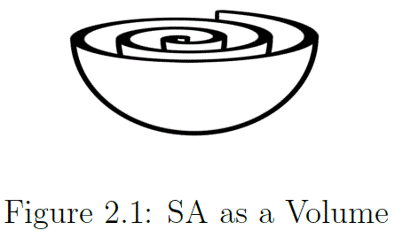

Working notebook — speculative, unfinished, not peer-reviewed.
Volume over zeta
Table 2.1 — Zeta function values
s
Closed exact
Calculated value
1
no value
no value
2
\(\tfrac{\pi^{2}}{6}\)
1.644934067…
3
unknown
1.202056903…
4
\(\tfrac{\pi^{4}}{90}\)
1.082323234…
5
unknown
1.036927755…
6
\(\tfrac{\pi^{6}}{945}\)
1.017343062…
Table 2.1. shows some known closed forms for the even values of ‘s’, the closed forms for the odd values of ‘s’ are unknown. Those for the even values have the form
The inverse square law, in physics, is any physical law stating that a specified physical quantity or intensity is inversely proportional to the square of the distance from the source of that physical quantity. The fundamental cause for this can be understood as geometric dilution corresponding to point-source radiation into three-dimensional space.
—Wikipedia: The inverse square law
A similar proportional symmetry exists between the result $\zeta\left(2\right)=\frac{\pi^{2}}{6}$ and the spherical volume enclosed by a surface area $SA=\pi^{2}$, expressed as twice the radius of such a volume.
The value volume over zeta is exactly twice the radius calculated for a sphere with $SA=\pi^{2}$. The function value $\zeta\left(2\right)=\frac{\pi^{2}}{6}$ represents a ratio which seems to sit in the middle of some dynamic process involving the expansion of a sphere. This becomes clear if we dissect the structure.
The ratio $\frac{V_{sa}}{\zeta(2)}=2r_{sa}$ has the form
Assume that $2\times r_{sa}$ is proportional to the radius of some next volume, the infinite sum of $\zeta\left(2\right)$ can be interpreted as the process that completes the inflation (by doubling of radius) from $V_{sa}$ up to $V_{next}$. The assumed inflation has to start from some initial volume.
This $V_{sa}$ is the volume after completion of $\zeta(2)$, therefore a division by 8 gives the initial volume: $V_{init}=$$\frac{V_{sa}}{8}\approx$$0.3644462151$ is the supposed start volume. This numerical result is not very informative, a better way is to use scale invariant ratios.
The scale invariant ratios
$V_{sa}$ itself is the end stage of a previous cycle
$V_{init}\overset{def}{=}1$ is the initial volume
Which makes $V_{sa}=8\times V_{init}=8$, the end-stage of $\zeta(2)$, thus relabel for clarity, $V_{sa}\rightarrow V_{end}$
$V_{end}$ is the stage before the next volume, therefore $V_{next}=8\times V_{end}=64$
The interpretation of volume over zeta in light of the scale invariant ratios indicates a (snapshot of a) dynamic structure of 3 consecutive stages of inflation. Stages $V_{end}$ and $r_{end}$ represent the value for the middle volume that is reached at completion of the zeta function.
To emphasize: $r_{end}=2$, refers to twice the radius associated with $V_{end}$.
This means that $V_{init}$ by method of completing the pattern must have a relative radius of $r_{init}=\frac{1}{2}$, because under this scheme volume over zeta returns twice the relative radius of the sphere. Now by logic of ratio,
The surface area of a sphere grows with a factor 4 by doubling the radius. Thus the volume of the current iteration, $V_{end}$ divided by the radius of the consecutive volume $r_{end}$, which is in fact the double radius found with $V_{end}$, gives the proportional multiplication factor of surface area by doubling of radius.
Observe that it simultaneously represents a *growth factor of 4*, ass well the scale invariant size of the current surface area.
In equation \eqref{eq:02.08}, $sa_{end}=4$ does refer to the surface area of the second iteration., e.g. $\{1,4,16,64\}$, but
in equation \eqref{eq:02.07}, $sa_{end}=4$, in context of the ratio where $2r_{sa}$ refers to the consecutive volume, refers to the constant rate of growth of surface area between iterations.
This aspect of a common ratio is also present for volume and radius, however, equation \eqref{eq:02.07} as a ratio, will proof to be crucial. The ratio $\frac{V_{end}}{r_{end}}=4$ is a constant value by necessity in this scheme, as we will see shortly.
The intimate relation (eq. \eqref{eq:02.09}) between the numerator and denominator begs for an explanation. Taken in unison they both encode for spherical aspects, but do so following different sequences involving the presumed spatial properties.
A seemingly three dimensional structure hovers just below the surface of the zeta function. However, it concerns an abstract object, abstract objects do not take up space in a physical sense.
And although clear spatial aspects are identified, there are no spatial aspects discernible in the infinite sum/product of the zeta function itself, nor is there any connection with 3-dimensional attributes in the zeta algorithm.
This lack of spatial properties might point to the outline of an abstract mathematical object that can be identified as a first principle under-laying the emergence of physical three dimensional structure.
Geometric progression
Nothing in the abstraction of the zeta function indicates a connection to spherical geometry. The zeta function arrives at the same answer by two distinct procedures, the additive sum formula $\sum_{n}^{\infty}n^{-s}$ and the multiplicative product formula $\prod_{p}^{\infty}\left(1-p^{-s}\right)^{-1}$.
At the core we find arithmetic and geometric sequences that outline spherical attributes interwoven in the set of rational numbers $\mathbb{Q}$. *Such abstract sequences by themselves,however, are not sufficient to cause/project spherical attributes in physical sense*.
In mathematics, a geometric progression, also known as a geometric sequence, is a sequence of numbers where each term after the first is found by multiplying the previous one by a fixed, non-zero number called the common ratio. For example, the sequence 2, 6, 18, 54, ... is a geometric progression with common ratio 3. Similarly 10, 5, 2.5, 1.25, ... is a geometric sequence with common ratio 1/2. Examples of a geometric sequence are powers $r^{k}$ of a fixed number r, such as $2^{k}$ and $3^{k}$. The general form of a geometric sequence is $\{a,ar,ar^{2},ar^{3},ar^{4},\dots\}$ where $r\neq 0$ is the common ratio and a is a scale factor, equal to the sequence's start value.
—Wikipedia: Geometric_progression
Progression and common ratios
The numerator of the general pattern (see equation \eqref{eq:02.09}), is simply expressed starting at $init\thinspace vol\thinspace\#0=\frac{1}{2}$ and then progresses with a common ratio of 2.
This, given the context, is indeed a sequence to encode for an expanding sphere, but void of proper context it is an arbitrary, unwarranted, choice and should just be interpreted as some linear sequence.
The second part expressed in the denominator, is more specific and gives clues how to interpret the ratio as a whole. The value of the denominator is itself a ratio
Here the numerator starts at $v=1$ and progresses with a common ratio of 8, $\left\{1,8,64,512,\dots\right\}$. Note that this sequence is encoded as an 8-fold increase of volume proportional to a doubling of the radius. Yet another linear expression to encode for an expanding sphere given the context in which it is found.
In the denominator the value represents $\frac{1}{4}$ of the volume in the numerator. This simple property makes that whole ratio of the denominator for each instance equal to 4, and thus encodes a static measure of surface area.
And this is however simple, just as it should be, because found is a spatial ratio that encodes a ratio of volume over surface area at the completion of the infinite sum/product $\zeta\left(2\right)$,
This is the pattern recognized in the inverse square law and the geometric progression of surface area by a common factor of 4, for each consecutive doubling of radius. *And yes, this $\frac{V_{end}=1}{SA_{end}=4}$ only holds for the infinite sum/product $\zeta\left(2\right)=\frac{\pi^2}{6}$*.
The challenge is therefore to provide a natural mechanism which independent of the abstraction, can be shown to necessarily emerge from some identifiable first condition and must self organizes such that it reflects the abstraction. Equation \eqref{eq:02.12} becomes,
The ratio as a whole reflects the same geometric sequence as the numerator $V_{init}$, it encodes an increasing volume as function of the radius being doubled in a geometric progression
the only difference is that the sequence lags two iterations behind. And in fact, both expressions (numerator and ratio overall) will proof to be sequences of increasing surface area:
It makes sense to designate surface area as the primary expression of the zeta function because it is present as common ratio of the combined expression in numerator and denominator.
Apparently the zeta function expresses a continuous increment in surface area that does not ‘enclose’ a volume, but IS the volume.

Figure 2.01 SA as a Volume
graphical impression of a volume resulting from wrapped surface area.
Fact is that in the geometric sequences any sense of continuous curvature is absent. It is the structure of the numerator and denominator of \eqref{eq:02.13} that allows us to envision the trace of a spherical object shaped like a 3d spiral of surface area (fig. volume mbrane monosheet).
It seems that the abstract sum exposes aspects that are spatial in nature, as if the algorithm $\zeta\left(2\right)$ actually traces some 3d object while traversing the infinite series.
The proposed hypothesis is the exact opposite such that the 3d structural aspects observed in nature, the tangible spatial aspects of 'space', might be merely an illusion. This presumed illusory aspect of 3-dimensional spatial aspect is also recognized in the holographic principle.
The rationals are a dense subset of the real numbers: every real number has rational numbers arbitrarily close to it. A related property is that rational numbers are the only numbers with finite expansions as regular continued fractions.
—Wikipedia: Real numbers and topological properties
In light of the topological argument, sec based on the sum of reciprocal squares of the natural numbers, one would not suspect such a sum to produce anything else but a rational value. Continuity as property of the Real numbers will be exposed as an illusion caused by topological projection, whereby the sets $\mathbb{Q}$ and $\mathbb{R}$ are merely distinguished by choice of perspective.
The spatial ratio, (equation \eqref{eq:02.17}) is discrete, consists of rational values which describe scale invariant ratios. This structure of scale invariant ratios can be interpreted in terms of spherical geometry.
The structure $\frac{V_{sa}}{\zeta(2)}\equiv 2r_{sa}$ as limit of the product $\zeta\left(2\right)=\frac{\pi^2}{6}$, indicates that $V_{sa}$ refers to an end volume, and that $\frac{\pi^{2}}{6}$ refers to $\frac{1}{6}$ the surface area of this volume $sa=\pi^{2}$.
This leaves the impression that the infinite product of the zeta function represents a complete cycle during which some volume expands by doubling of its radius, from the first term of the infinite series to the last.
Abstract concepts do not have spatial properties nor do they exhibit dynamic behavior in any physical sense, so what does '*some volume expands by doubling of its radius*' in essence mean?
Postulated is an abstract spatial object under-laying the nature of numbers. This abstraction exposes spherical properties like radius, circumference and volume *detached from any apparent physical context*
Detached from spatial dimensions
The detachment from spatial dimensions is clear because the zeta algorithm does not operate on a data set obtained from a spatial context, be it sampled from nature or derived from some abstract model of nature.
All that is derived from the function value $\zeta\left(2\right)=\frac{\pi^2}{6}$ are patterns that match geometric sequences and a apparently Real number function value that might be a infinitely close rational approximation.
The conjecture is that discrete accumulation, be it abstract numerically or wave/particle like as observed in physics, follows a first principle that might be described as 'pre-mathematical'.
This first principle forces both numerical abstract models and/or physical reality to emerge such that the structure of both systems are clearly of common descent but not necessarily contingent on each other.
In other words, this first principle must be self evidently present in abstract numerical models and physical systems such that it has explanatory power for the effectiveness of mathematics in modeling natural systems, or reversely, the ability to gain new mathematical insight from observing nature.
Ab initio principle
The hypothesized 'pre-mathematical' first principle, as will be presented, follows from the theory of convex sets and is surprisingly simple to recognize in context of physical reality. It is in the physical implementation that we find the bridge to the Riemann zeta function and the proof for the conjecture 'all zeros have real part one half'.
This means that a model for the distribution of the zeta zeros and the source for particle repulsion will be known from first principle and likewise rooted in basic mathematical principles.
As stated in chapter 1, we will not use complex analysis, we will arrive at the zeta zeros from another angle. For this we build a new analytic tool and start by contrasting the mathematical abstraction of the sum of reciprocal squares and its supposed spatial attributes against spatial attributes of spherical geometry as observed in natural systems.
The zeta function value seems to indicate the inflation of a volume with respect to an initial volume. It does so because it has in it the radius for the successive cycle of inflation.
Clearly any numerical quantity derived from appropriate context can be interpreted to represent length, area, volume, time, any applicable dimensional quality. Such a context is for the zeta function, an infinite product over the primes (all primes) or infinite sum over the natural numbers (all numbers) not obvious at all.
Why do we find a relation to the inverse square law and spherical geometry? Numerically a ‘volume’ has inflated, and the process expresses this in a value that encodes a spatial ratio (see equation \ref{eq:02.09}). The ratio $\frac{\pi^{2}}{6}$ appears to be based on a surface area $\pi^{2}$ and must thus be proportional to the volume it encloses.
The first aspect to take note of is that the zeta function expresses no elements of spherical geometry, i.e. Only rational numerical values, line segments if you will, are the sole constituents of the function value.
Because spatial aspects, if at all present, do not follow from the zeta algorithm, care has to be taken not to inadvertently introduce spatial aspects. How to prevent erroneous introduction of those aspects?
Consider the following formulas
\begin{equation}\begin{split}V&=\frac{4}{3}\pi r^{3}\text{ yields the volume of a sphere}\\\\r&=\sqrt[3]{\frac{V}{(\frac{4}{3}\pi)}}\text{ yields the radius from a given volume}\\\\SA&=4\pi r^{2}\text{ yields the surface area of a sphere}\\\\r&=\sqrt{\frac{SA}{4\pi}}\text{ yields the radius from a given surface area}\end{split}\label{eq:02.19}\tag{02.19}\end{equation}
In each case the spatial aspect is represented by either raising the radius to a power, or reversely, taking the $n_{th}root$ of the value $r^3=\frac{V}{(\frac{4}{3}\pi)}$ for volume or $r^2=\frac{SA}{4\pi}$ for surface area. The factors ($\frac{4}{3}\pi$) and $\left(4\pi\right)$ represent the curvature detached from spatial aspects.
The subject of investigation is why the Real number value of $\zeta\left(2\right)=\frac{\pi^2}{6}$ follows from, in essence, a rational context. We do assume however that spatial attributes like volume,surface and length are illusory aspects of reality. So when contrasting the apparent spatial aspects of the sum of reciprocal squares we have to take care not to unwittingly introduce spatial aspects like $V=l\times h\times w$ when the assumption is there are no analogues to tangible spatial aspects represented in the sum of reciprocal squares.
Not from a spatial context or abstraction thereof
For instance if we cube a radius we define a volume, and reversely, if we apply the formula $r=\sqrt[3]{\frac{V}{(\frac{4}{3}\pi)}}$ the assumption is that $|\frac{4}{3}\pi r^{3}|$ represents a volume, be it derived from some model with spatial properties, or from measurements obtained from some spatial context.
The function $\zeta\left(2\right)=\frac{\pi^2}{6}$ represents neither the former nor the latter, therefor, to take a cube root in this context, for instance $r=\sqrt[3]{x}$, is in essence an operation that presupposes volume, and thus introduces a spatial context in the results. A context not present in the zeta function algorithm to begin with.
Therefore the correct action is to obtain the initial- and end-radius conform the formula $r=\sqrt[3]{\frac{V}{(\frac{4}{3}\pi)}}$, but omit reducing spatial aspects as if they represent volume. This simply means to stop short of reducing the cubic root in order to obtain the regular 1-dimensional radius, but in stead work with the cubed value as is: $r^{3}=\frac{V}{(\frac{4}{3}\pi)}$.
Simply put, if the question “who or what cubed that value?”, can not be answered, then assume it is not cubed at all, after all, the function $\zeta\left(2\right)$ is nothing more then a sum/product of rational values which as such has no relation to any spatial context.
The cubed radius $r^{3}=\frac{V}{(\frac{4}{3}\pi)}$ can be approached alternatively and has a deep connection to $\frac{V_{sa}}{\zeta\left(2\right)}=2r_{sa}$. This connection leads to a two dimensional model that, like holographic models, causes an illusion/projection of three dimensional space.
To confirm this conjecture of the illusory aspect of spatial properties, a model is needed to explain how it is that we experience a 3 dimensional reality.
Spherical scale-invariant proportion
Assuming the zeta function encodes a scale-invariant proportion of surface area (SA), a rather naive approach provides more insight. Mapping any value for $\zeta\left(s\right)=\frac{\pi^{s}}{x}$ to a circumference, surface area or for instance cubic value, can be achieved by using the appropriate numerator and retain proportionality in the denominator, $\frac{\pi^{s}}{\pi^{s}\zeta\left(2\right)^{-1}}>=1$.
Scaling to $\zeta\left(2\right)=\frac{2\pi}{x}$ a circumference over a radius. Calculate the (s-1) derivative of the numerator and preserve proportionality with respect to that derivative in the denominator. e.g. for $\zeta\left(2\right)$ where s=2, it takes the first derivative to map $\pi^{2}$ to $2\pi^{1}$: $f\left(\pi\right)=\pi^{2}\rightarrow f^{\,\prime}\left(\pi\right)=2\pi$:
Obviously the function value for $\zeta\left(2\right)$ must be known in order to feed back in this formula, however, it is the mapping that will provide insight into the inner structure of the zeta function.
This pattern will hold for all ‘s’. Because 's' is the exponent of the numerator, the algorithm can be generalized for all ‘s’ by application of the factorial function. For s=5,
And because this is a ratio, proceed by simplifying to the first derivative of $\zeta\left(s\right)$ by multiplying the ratio with 2 over ‘s’ factorial, and map all $\zeta\left(s\right)$ to the radius $r=2\pi$:
The general pattern: the denominator for all 's' is smaller than the numerator, the quotient will approach 1 in the limit, i.e. the denominator will approach $2\pi$:
Table 2.Zeta as a scale invariant proportion lists the first 6 values for s showing the mapping to $2\pi$. The last column in this table shows the shorthand version for mapping the zeta function to $SA=\pi^{2}$, or to any $\pi^n$. For the purpose of this thesis we continue with the values proportional to $\pi^{2}$ as shown in the rightmost column, $ratio\propto\pi^{2}$.